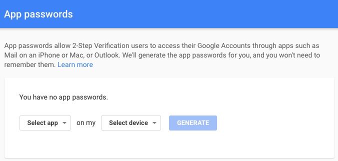
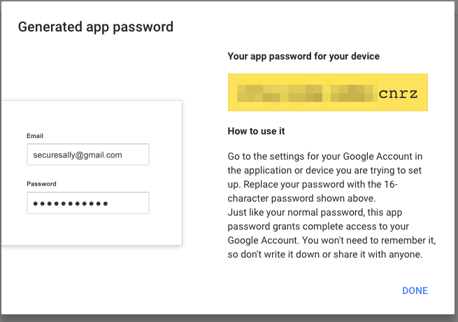
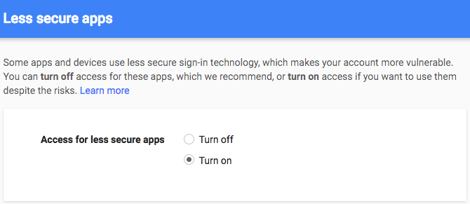

Configure Postfix to Send Mail Using Gmail and Google Apps on Debian or Ubuntu
Updated by Linode Written by Linode Community
Postfix is a Mail Transfer Agent (MTA) that can act as an SMTP server or client to send or receive email. There are many reasons why you would want to configure Postfix to send email using Google Apps and Gmail. One reason is to avoid getting your mail flagged as spam if your current server’s IP has been added to a blacklist.
In this guide, you will learn how to install and configure a Postfix server on Debian or Ubuntu to send email through Gmail and Google Apps. For information on configuring Postfix with other external SMTP servers, see our Configure Postfix to Send Mail Using an External SMTP Server guide.
Before You Begin
Complete our Getting Started and Securing Your Server guides and ensure that the Linode’s hostname is set.
Update your system:
sudo apt-get update && sudo apt-get upgradeUse your web browser to confirm your email login credentials by logging in to Gmail.
NoteThis guide is written for a non-root user. Commands that require elevated privileges are prefixed withsudo. If you’re not familiar with thesudocommand, you can check our Users and Groups guide.
Install Postfix
In this section, you will install Postfix as well as libsasl2, a package which helps manage the Simple Authentication and Security Layer (SASL).
Install Postfix and the
libsasl2-modulespackage:sudo apt-get install libsasl2-modules postfixDuring the Postfix installation, a prompt will appear asking for your General type of mail configuration. Select Internet Site:
Enter the fully qualified name of your domain. In this example, fqdn.example.com:
Once the installation is complete, confirm that the
myhostnameparameter is configured with your server’s FQDN:- /etc/postfix/main.cf
-
1myhostname = fqdn.example.com
{kind=link}
{kind=link}
Generate an App Password for Postfix
When Two-Factor Authentication (2FA) is enabled, Gmail is preconfigured to refuse connections from applications like Postfix that don’t provide the second step of authentication. While this is an important security measure that is designed to restrict unauthorized users from accessing your account, it hinders sending mail through some SMTP clients as you’re doing here. Follow these steps to configure Gmail to create a Postfix-specific password:
Log in to your email, then click the following link: Manage your account access and security settings. Scroll down to “Password & sign-in method” and click 2-Step Verification. You may be asked for your password and a verification code before continuing. Ensure that 2-Step Verification is enabled.
Click the following link to Generate an App password for Postfix:

Click Select app and choose Other (custom name) from the dropdown. Enter “Postfix” and click Generate.
The newly generated password will appear. Write it down or save it somewhere secure that you’ll be able to find easily in the next steps, then click Done:

Add Gmail Username and Password to Postfix
Usernames and passwords are stored in sasl_passwd in the /etc/postfix/sasl/ directory. In this section, you’ll add your email login credentials to this file and to Postfix.
Open or create the
/etc/postfix/sasl/sasl_passwdfile and add the SMTP Host, username, and password information:- /etc/postfix/sasl/sasl\\_passwd
-
1[smtp.gmail.com]:587 username@gmail.com:password
Note
The SMTP server address configurationsmtp.gmail.comsupports message submission over port 587 (StartTLS) and port 465 (SSL). Whichever protocol you choose, be sure the port number is the same in/etc/postfix/sasl/sasl\\_passwdand/etc/postfix/main.cffiles. See Google’s G Suite Administrator Help for more information.Create the hash db file for Postfix by running the
postmapcommand:sudo postmap /etc/postfix/sasl/sasl_passwd
If all went well, you should have a new file named sasl_passwd.db in the /etc/postfix/sasl/ directory.
Secure Your Postfix Hash Database and Email Password Files
The /etc/postfix/sasl/sasl_passwd and the /etc/postfix/sasl/sasl_passwd.db files created in the previous steps contain your SMTP credentials in plain text.
To restrict access to these files, change their permissions so that only the root user can read from or write to the file. Run the following commands to change the ownership to root and update the permissions for the two files:
sudo chown root:root /etc/postfix/sasl/sasl_passwd /etc/postfix/sasl/sasl_passwd.db
sudo chmod 0600 /etc/postfix/sasl/sasl_passwd /etc/postfix/sasl/sasl_passwd.db
Configure the Postfix Relay Server
In this section, you will configure the /etc/postfix/main.cf file to use Gmail’s SMTP server.
Find and modify
relayhostin/etc/postfix/main.cfto match the following example. Be sure the port number matches what you specified in/etc/postfix/sasl/sasl\\_passwdabove.- /etc/postfix/main.cf
-
1relayhost = [smtp.gmail.com]:587
At the end of the file, add the following parameters to enable authentication:
- /etc/postfix/main.cf
-
1 2 3 4 5 6 7 8 9 10# Enable SASL authentication smtp_sasl_auth_enable = yes # Disallow methods that allow anonymous authentication smtp_sasl_security_options = noanonymous # Location of sasl_passwd smtp_sasl_password_maps = hash:/etc/postfix/sasl/sasl_passwd # Enable STARTTLS encryption smtp_tls_security_level = encrypt # Location of CA certificates smtp_tls_CAfile = /etc/ssl/certs/ca-certificates.crt
Save your changes and close the file.
Restart Postfix:
sudo systemctl restart postfix
Troubleshooting - Enable “Less secure apps” access
In some cases, Gmail might still block connections from what it calls “Less secure apps.” To enable access:
Enable “Less secure apps” access
Select Turn on. A yellow “Updated” notice will appear at the top of the browser window and Gmail will automatically send a confirmation email.

Test Postfix as shown in the following section. If your test emails don’t appear after a few minutes, disable captcha from new application login attempts and click Continue.
Test Postfix
Use Postfix’s sendmail implementation to send a test email. Enter lines similar to those shown below, and note that there is no prompt between lines until the . ends the process:
sendmail recipient@elsewhere.com
From: you@example.com
Subject: Test mail
This is a test email
.
Check the destination email account for the test email. Open syslog using the tail -f command to show changes as they appear live:
sudo tail -f /var/log/syslog
CTRL + C to exit the log.
Join our Community
Find answers, ask questions, and help others.
This guide is published under a CC BY-ND 4.0 license.